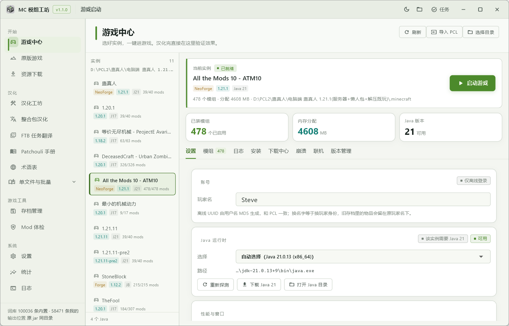
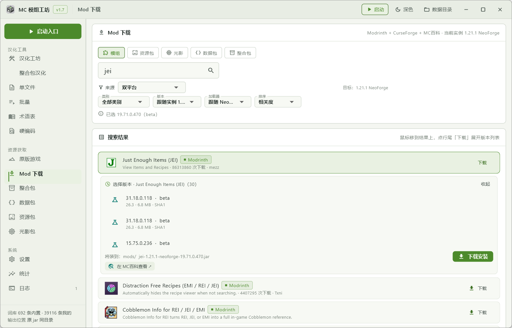

01
游戏中心
扫描本机游戏实例，自动探测 Java，管理内存与窗口参数，一键启动验证汉化效果。
不只是翻译器——从找 Mod、装游戏到汉化验证，都在同一个窗口里。
扫描本机游戏实例，自动探测 Java，管理内存与窗口参数，一键启动验证汉化效果。
中文关键词检索 Mod、资源包、光影、数据包、整合包；购物车批量安装，依赖前置自动补齐。
单文件 / 批量 / 整合包三种模式；翻译记忆跨会话复用、术语优先、多 API Key 轮询、暂停续译与断点恢复。
FTB 任务书、Patchouli 手册、硬编码文本、光影语言文件逐项处理，改写前自动备份，失败可回滚。
内置 CFPA 标准译名，用户词库优先级最高；支持导入更新资源包，忽略列表对内置词库同样生效。
失败清单落盘可重试，配置备份自动脱敏，一键诊断包附带脱敏日志，反馈问题更省力。
左侧分组导航 + 宽敞内容区，深浅主题可切换。


网盘分享页含全部历史版本，两个文件都在这个分享页里：
安装包 SHA256：ccf1c64b3262014fc75dcadeefdd23001b3cb435ae5991caec3e99cd8c31043d
内置更新检查，后续新版本启动即可收到提示。
数据安全加固：还原失败自动回滚、备份失败即中止、API Key 迁移回读确认、翻译记忆存盘失败可见。性能提升：启动不再加载十万词条、翻译记忆倒排索引、游戏扫描定点探测。新增目标语言配置（简中/繁中/日文/英文），贯通全部翻译引擎。
翻译支持暂停/继续与断点续译；批量还原 6 秒内可撤销；新增失败与诊断页、校对工作台与翻译限速调节。
导航重构为迷你分组栏，版本管理整合进侧栏，修复点选版本卡顿与 Java 扫描为空等问题。
本地处理：所有文件改写在本机完成，翻译文本仅发往用户自己配置的翻译服务。API Key 存于 Windows 系统凭据库，配置备份与诊断包均已脱敏。
数据来源：内置 CFPA 简体中文标准译名词库，来自 CFPAOrg/Minecraft-Mod-Language-Package，采用 CC BY-NC-SA 4.0 协议。本软件免费非商业，按相同方式共享并保留署名；鸣谢 CFPA 全体译者与贡献者。
反馈：遇到问题请在设置页点「打包诊断包」，把生成的脱敏 zip 随问题描述一起发给发布者。